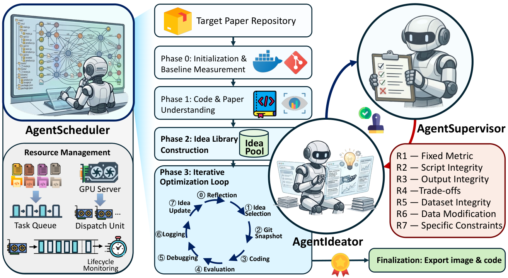
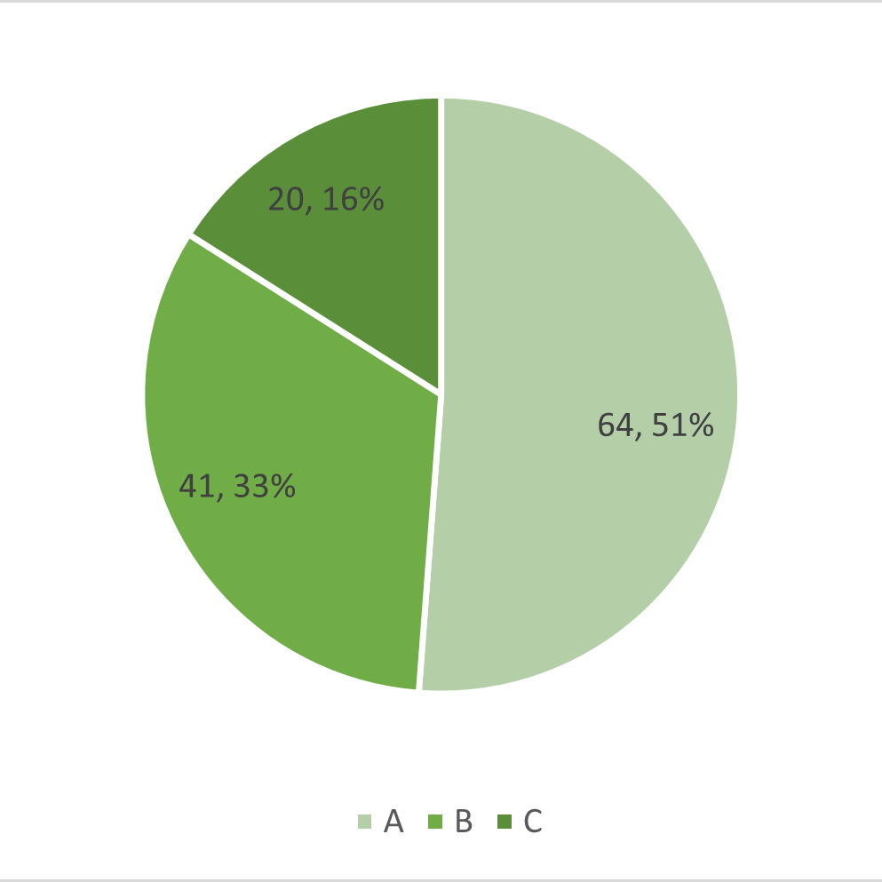
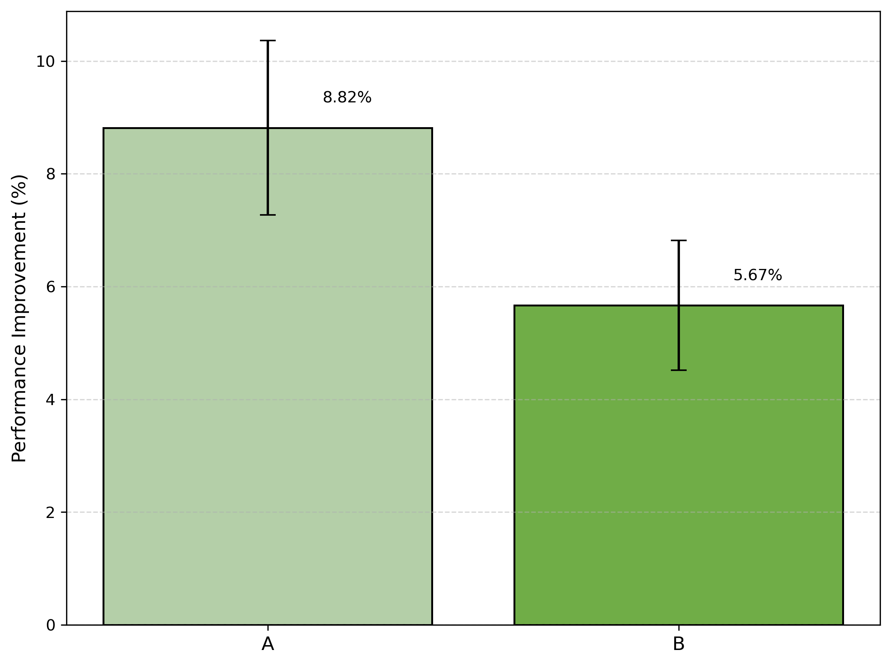

Obtaining a machine learning paper and its code is often only the beginning: where are the data, how does the environment work, which result should be reproduced, and how can an improvement remain a fair comparison? AutoSOTA organizes these tasks into a loop of execution, feedback, and optimization. This reading follows that workflow and examines the evidence behind its claim of “105 new SOTA models.”
We discuss AutoSOTA: An End-to-End Automated Research System for State-of-the-Art AI Model Discovery by Yu Li and colleagues, using arXiv v2, updated on May 25, 2026. This is a preprint. We distinguish the authors' reports, our reading of the system, and proposals for further experiments.
1. Topic: making improvements to papers executable
Suppose we want to improve a time-series forecasting model. A reasonable starting point is to run the authors' code, obtain an error close to the paper's result, identify weaknesses, and test a modification. In practice, the code may depend on obsolete libraries, training scripts may omit settings, and data links may be broken. Even a better score requires checking for test leakage, changes to evaluation, and additional computation.
Automated empirical research asks whether AI can sustain this process and use verifiable experimental feedback to decide what to do next. It combines three capabilities: connecting literature to resources, turning fragile software into runnable experiments, and finding improvements under explicit constraints.
Evaluation therefore needs to examine both execution and judgment. Running code does not establish faithful replication, and a better metric needs a comparison target, a cost, and a scope. “Advancing SOTA” especially requires distinguishing improvement over a paper's method on a particular task from a broader comparison against the current research frontier.
2. Related work: program optimization, replication, and autonomous research
Three primary works provide useful perspectives.
| Work | Main exploration | Connection to this paper |
|---|---|---|
| AlphaEvolve | Language models modify programs, using evaluator feedback and evolutionary search | Executable evaluation can drive algorithm search; AutoSOTA additionally addresses resource recovery and experiment setup |
| PaperBench | Replicate papers from scratch and assess implementation, execution, and results through hierarchical rubrics | Replication needs checkable requirements; reusing official repositories here creates a different starting point |
| AI Scientist-v2 | Connect hypotheses, experimental tree search, analysis, and manuscript writing | Demonstrates a broader research workflow; AutoSOTA concentrates on executable improvements to existing methods |
Our interpretation is that AutoSOTA centers the connection between research ideas and actual research software. Its working object includes a full repository and external dependencies, rather than only a function with a prepared environment and evaluator. However, these systems are not compared experimentally on the same tasks and budgets in this paper, so this positioning does not establish a performance ranking.
3. Research questions: which barriers must the system cross?
We organize the goals into three questions for this reading; these are our synthesis, rather than questions quoted from the authors.
- How can a paper become a clear, executable experimental task? Locate code, data, and models, and identify the metric to reproduce and optimize.
- How can long experiments keep making progress? Handle setup failures, repeated debugging, lost context, and resource scheduling while preserving recoverable states.
- How can improvements remain valid and comparable? Move beyond repeated parameter tuning while preventing changes to evaluation, data, or outputs from manufacturing gains.
Section 2 describes resource and objective preparation, experiment evaluation, code optimization, and reflection and ideation as four components. Section 3 organizes eight agents into three macro modules, treating code modification as the operational bridge between ideas and experiments. These are compatible levels of description.
4. Method: from a paper to an exported improved repository
The input is a paper and the research resources that must be recovered; the output is an executable improved repository and its runtime environment. We follow the workflow, explaining each role's inputs, actions, and deliverables.
Step 1: recover resources and define the target
AgentResource uses paper metadata, PDFs, and project pages to locate official repositories, exclude obvious placeholders, and retrieve external dependencies such as data and pretrained models. It produces a task bundle linking the paper, code, and resources.
AgentObjective decomposes replication requirements into a rubric tree. Parent nodes can represent result matching, method implementation, or environment configuration; children refine them into pass/fail requirements. Breadth-first expansion is bounded by weight thresholds and maximum depth. Context becomes more detailed as nodes deepen, moving from abstracts to methods and figures, then implementation details.
A critical implementation boundary appears in Section 3.3: the current loop primarily uses Result Match, emphasizing reported values for the proposed method and best baseline. Other structural and semantic dimensions are not yet fully used for feedback. The complete rubric design should therefore not be interpreted as an already comprehensive implementation-fidelity check.
Step 2: establish an executable replication baseline
AgentInit turns the task bundle into a plan and container environment. It checks GPU, CUDA, Python, and framework compatibility, recovers training and evaluation commands, and repairs paths or non-core supporting logic when necessary. Repairs are supposed to preserve the data split and experimental protocol.
AgentMonitor observes logs and tool traces outside the execution loop, detecting repeated installations, stalled debugging, and timeouts. It can recommend a different approach, resume work, or terminate execution. AgentFix performs concrete repairs and records failure signatures, attempted solutions, and outcomes to reduce repeated mistakes.
The output includes a runnable repository, a measured baseline, and execution records. External files preserve a code map, idea library, and research report so later iterations can recover context. Sections 3.4–3.6 describe execution and recovery.
Step 3: generate constrained ideas and schedule experiments
AgentIdeator aligns paper objectives, editable code locations, and external research knowledge to build an idea library. Ideas are categorized at parameter, code, and algorithm levels, with priorities, risks, and implementation assumptions. The first question is what may change and what must remain fixed, followed by possible gains.
AgentScheduler measures the unmodified baseline, analyzes the code, and builds the library. Each iteration includes reflection, idea selection, a Git snapshot, implementation, evaluation, debugging, result recording, and a library update. If the preceding three iterations only adjusted parameters, the system requires a structural proposal. This Leap Path allows up to five subsequent exploration and debugging iterations before rollback, giving a new structure time to develop.

The scheduler preserves the best code state, restores and evaluates it again at completion, and exports the code and a Docker image. Across papers, scheduling uses two-GPU units and persistent task states. The practical contribution is to associate each attempted idea with identifiable code, scores, and runtime artifacts. Section 3.8 details the process.
Step 4: keep checking whether improvements are valid
AgentSupervisor checks red lines during code analysis, idea screening, and structural proposal generation. The text actually lists R1–R7: fixed metric parameters, evaluation-script integrity, authentic model outputs, restrictions on unfair metric trade-offs, preserved data splits, no changes to the data distribution, and explicit paper-specific constraints.
For example, a mean over runs cannot be replaced by the best run, scoring scripts cannot be edited, and test data cannot be used for training. Documents, audits, and prompts enforce these boundaries. Their presence does not establish that violations have been eliminated; final audits and independent execution remain necessary. See Section 3.9 for the rules.
5. Experiments and results: overall effectiveness before sources of improvement
Main experiment: what is the denominator behind 105 successes?
The authors collect recent papers from eight AI conferences, filter for methodological contributions, public code, and repository readiness, then constrain environment and execution costs. This screening belongs in the interpretation of the success rate.
| Stage | Paper count or condition | Interpretation |
|---|---|---|
| Preliminary candidate pool | 2,347 | After research-type, code-availability, and readiness screening |
| Preliminary execution testing | 745 | A selected subset, rather than the full candidate pool |
| Final experimental set | 125 | Excludes unresolved setup failures and tasks requiring more than 4 GPU hours for one full replication |
| Reported successful improvements | 105 / 125, 84% | Denominator is the final experimental set |
| Remaining outcomes | 20 / 125, 16% | Class C; its definition differs across passages, as discussed below |
Source: Sections 4.1–4.2. The reported 84% and 16% describe the final set; they are not end-to-end success rates over all candidate papers.
The main comparison is against each paper's method baseline, optimizing a selected core metric. Table 1 lists improvement percentages for 105 successful entries; it does not provide a same-task, same-budget system comparison against other research agents. The abstract reports approximately five hours per paper. That cannot directly be converted into total GPU hours or model-call cost. Model versions, per-task hardware, and call expenses are not fully reported in a form supporting a uniform cost reconstruction.
Reported paper values and locally measured baselines also need to be separated. The workflow anchors optimization to measured baselines, but case-study percentages do not always follow one denominator convention. For Neural MJD, the paper MAE is 17.411, the reproduced value is 17.127, and the final value is 14.096; the authors' approximately 19.0% uses the first value. Here, “105 new SOTA models” is best read as the authors' reported improvements over selected original methods; it does not automatically establish superiority over every contemporary method in those fields.
Outcome categories: structural changes and average gains
The authors divide the final set into algorithmic or structural changes, parameter optimization, and failures.

| Category | Count and share | Mean improvement within category |
|---|---|---|
| A: algorithmic or structural changes | 64 / 125, approximately 51% | 8.82% |
| B: parameter optimization | 41 / 125, approximately 33% | 5.67% |
| C: failed or invalid optimization | 20 / 125, 16% | No comparable valid improvement reported |

These results support the claim that outputs include changes beyond parameter tuning. However, A and B are retrospective categories, not randomized treatment groups. The comparison of 8.82% with 5.67% does not establish a causal benefit from structural changes, and SEM does not prove that every individual improvement is significant.
The failure definition requires preserving an inconsistency in the source. Figure 8a and the categorization passage describe C as achieving no improvement. A later paragraph in Section 4.2 calls these 20 cases invalid optimizations that the supervisor failed to block. The disclosed evidence does not resolve how many belong to each failure type. We therefore use “failed or invalid optimization,” without reducing all 16% to ordinary search failures or presenting it as a fully specified supervision-violation statistic.
Cases and supporting analysis: where did gains come from?
Case studies make the modifications interpretable. The following four examples are selected cases, rather than average trajectories over all tasks.
| Case and metric | Starting point → final result | Authors' reported improvement | Main intervention and interpretive boundary |
|---|---|---|---|
| FR-Spec, throughput, higher is better | 674.58 → 765.27 tok/s | 13.44% | Repair speculative-decoding state reuse and reduce CPU–GPU synchronization; includes engineering correction |
| StaB-ddG, per-interface Pearson correlation, higher is better | 0.4897 → 0.5655 | 15.48% | Repair mutation-string alignment and blend model/FoldX predictions at 60% / 40%; weight-selection data boundaries matter |
| Neural MJD, test MAE, lower is better | Measured 17.127 → 14.096; paper value 17.411 | Approximately 19.0% | Add antithetic variates and adjust sampling and loss; the percentage uses the paper value |
| MoSES, CVRP optimality gap, lower is better | 0.914% → 0.444% | 51.4% | Change gating, increase test-time augmentation, and add routing heuristics; inference takes approximately 3.7 → 103 seconds |
Source: Section 4.3. Improvements are relative percentages, not accuracy percentage points. Neural MJD reached 14.084 during search; we use the authors' locked final result of 14.096 rather than replacing it with the search optimum.
The cases distinguish code repair, fusion of existing signals, statistical method changes, and increased search computation. Each can have practical value, but their implications for novelty and efficiency differ. In particular, MoSES improves solution quality while substantially increasing inference time; 51.4% alone does not establish a same-cost advantage.
The paper does not present controlled system-level ablations removing monitoring, failure memory, the Leap Path, or supervision. Cases and categories show what the complete system produced, but do not isolate each of the eight roles' contributions or establish a budget-matched advantage over other systems.
6. Our reflections
Topic reflection: what is this field studying?
For us, the central question is how research ideas can be tested against real software and experiments, with progress continuing after failure. Connecting environment recovery, state preservation, evaluation boundaries, and ideation in one workflow emphasizes that research automation cannot be measured only by generated code or a completed manuscript.
Empirical improvement on an existing task, a reproducible research contribution, and independent discovery of a new problem are different goals. AutoSOTA mainly offers system design and cases connecting the first two. More independent evidence is needed to determine whether the improvements are robust, transferable, and novel.
Limitation reflection: what remains unresolved?
- Task coverage and cost are selective. The final set excludes difficult installations and expensive experiments. Incomplete model, call, and hardware accounting limits assessment of returns across broader research settings.
- Metric gains remain separated from fully trustworthy research. The current rubric focuses on result matching, and Class C definitions differ. Without uniformly reported multiple seeds, independent held-out testing, and per-task audit evidence, selection effects and chance gains from repeated search remain difficult to exclude.
- Design contributions and research value are not separately established. There are no controlled ablations of core modules, and A/B categories are not causal comparisons. Bug fixes, integration of existing tools, and increased inference computation require distinct assessments of contribution and novelty.
Solution reflection: which directions could address these issues?
The following are our proposed experiments, not results already established by the paper.
- For coverage and cost: preregister a consecutively sampled paper set, report attrition reasons and elapsed time at every stage, retain long-running and failed-installation tasks, and compare output under matched GPU hours, model expenses, and human intervention time.
- For trustworthiness: independently freeze evaluation scripts, data splits, and audit rules; select candidates on validation data and rerun multiple seeds on tests withheld from search. Release code versions, logs, all metrics, and failure categories, with domain experts assessing the automatic rubric's fidelity to the method.
- For design and value: remove monitoring, memory, the Leap Path, and supervision separately under the same model and budget, comparing valid improvement and violation rates. Add blinded novelty review of successful artifacts and quality-versus-inference-cost curves to distinguish correction, methodological progress, and computation scaling.
Version and materials: based on the AutoSOTA v2 PDF and its HTML full text. Original figures belong to Yu Li and colleagues and are attributed under CC BY 4.0, without redrawing. Tables are organized from the reported text and figures. Interpretation, limitations, and proposed experiments are our reading judgments.